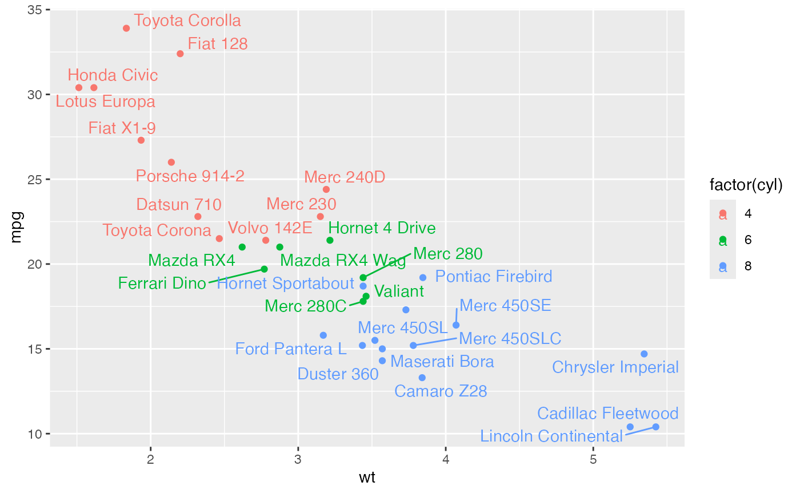
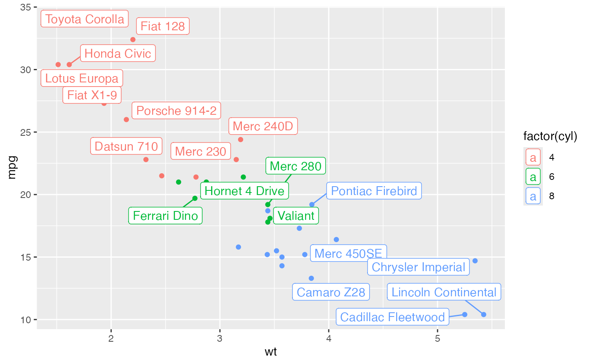

Repulsive textual annotations.
Source:R/geom-label-repel.R, R/geom-marquee-repel.R, R/geom-text-repel.R
geom_text_repel.Rdgeom_text_repel adds text directly to the plot.
geom_label_repel draws a rectangle underneath the text, making it
easier to read. The text labels repel away from each other and away from
the data points.
Usage
geom_label_repel(
mapping = NULL,
data = NULL,
stat = "identity",
position = "identity",
parse = FALSE,
...,
box.padding = 0.25,
label.padding = 0.25,
point.padding = 1e-06,
label.r = 0.15,
label.size = 0.25,
min.segment.length = 0.5,
arrow = NULL,
force = 1,
force_pull = 1,
max.time = 0.5,
max.iter = 10000,
max.overlaps = getOption("ggrepel.max.overlaps", default = 10),
nudge_x = 0,
nudge_y = 0,
xlim = c(NA, NA),
ylim = c(NA, NA),
na.rm = FALSE,
show.legend = NA,
direction = c("both", "y", "x"),
seed = NA,
verbose = getOption("verbose", default = FALSE),
inherit.aes = TRUE
)
geom_marquee_repel(
mapping = NULL,
data = NULL,
stat = "identity",
position = "identity",
...,
box.padding = 0.25,
point.padding = 1e-06,
min.segment.length = 0.5,
arrow = NULL,
force = 1,
force_pull = 1,
max.time = 0.5,
max.iter = 10000,
max.overlaps = getOption("ggrepel.max.overlaps", default = 10),
nudge_x = 0,
nudge_y = 0,
xlim = c(NA, NA),
ylim = c(NA, NA),
na.rm = FALSE,
show.legend = NA,
direction = c("both", "y", "x"),
seed = NA,
verbose = getOption("verbose", default = FALSE),
inherit.aes = TRUE
)
geom_text_repel(
mapping = NULL,
data = NULL,
stat = "identity",
position = "identity",
parse = FALSE,
...,
box.padding = 0.25,
point.padding = 1e-06,
min.segment.length = 0.5,
arrow = NULL,
force = 1,
force_pull = 1,
max.time = 0.5,
max.iter = 10000,
max.overlaps = getOption("ggrepel.max.overlaps", default = 10),
nudge_x = 0,
nudge_y = 0,
xlim = c(NA, NA),
ylim = c(NA, NA),
na.rm = FALSE,
show.legend = NA,
direction = c("both", "y", "x"),
seed = NA,
verbose = getOption("verbose", default = FALSE),
inherit.aes = TRUE
)Arguments
- mapping
Set of aesthetic mappings created by
aesoraes_. If specified andinherit.aes = TRUE(the default), is combined with the default mapping at the top level of the plot. You only need to supplymappingif there isn't a mapping defined for the plot.- data
A data frame. If specified, overrides the default data frame defined at the top level of the plot.
- stat
The statistical transformation to use on the data for this layer, as a string.
- position
Position adjustment, either as a string, or the result of a call to a position adjustment function.
- parse
If TRUE, the labels will be parsed into expressions and displayed as described in ?plotmath
- ...
other arguments passed on to
layer. There are three types of arguments you can use here:Aesthetics: to set an aesthetic to a fixed value, like
colour = "red"orsize = 3.Other arguments to the layer, for example you override the default
statassociated with the layer.Other arguments passed on to the stat.
- box.padding
Amount of padding around bounding box, as unit or number. Defaults to 0.25. (Default unit is lines, but other units can be specified by passing
unit(x, "units")).- label.padding
Amount of padding around label, as unit or number. Defaults to 0.25. (Default unit is lines, but other units can be specified by passing
unit(x, "units")).- point.padding
Amount of padding around labeled point, as unit or number. Defaults to 0. (Default unit is lines, but other units can be specified by passing
unit(x, "units")).- label.r
Radius of rounded corners, as unit or number. Defaults to 0.15. (Default unit is lines, but other units can be specified by passing
unit(x, "units")).- label.size
Size of label border, in mm.
- min.segment.length
Skip drawing segments shorter than this, as unit or number. Defaults to 0.5. (Default unit is lines, but other units can be specified by passing
unit(x, "units")).- arrow
specification for arrow heads, as created by
arrow- force
Force of repulsion between overlapping text labels. Defaults to 1.
- force_pull
Force of attraction between a text label and its corresponding data point. Defaults to 1.
- max.time
Maximum number of seconds to try to resolve overlaps. Defaults to 0.5.
- max.iter
Maximum number of iterations to try to resolve overlaps. Defaults to 10000.
- max.overlaps
Exclude text labels when they overlap too many other things. For each text label, we count how many other text labels or other data points it overlaps, and exclude the text label if it has too many overlaps. Defaults to 10.
- nudge_x, nudge_y
Horizontal and vertical adjustments to nudge the starting position of each text label. The units for
nudge_xandnudge_yare the same as for the data units on the x-axis and y-axis.- xlim, ylim
Limits for the x and y axes. Text labels will be constrained to these limits. By default, text labels are constrained to the entire plot area.
- na.rm
If
FALSE(the default), removes missing values with a warning. IfTRUEsilently removes missing values.- show.legend
logical. Should this layer be included in the legends?
NA, the default, includes if any aesthetics are mapped.FALSEnever includes, andTRUEalways includes.- direction
"both", "x", or "y" – direction in which to adjust position of labels
- seed
Random seed passed to
set.seed. Defaults toNA, which means thatset.seedwill not be called.- verbose
If
TRUE, some diagnostics of the repel algorithm are printed- inherit.aes
If
FALSE, overrides the default aesthetics, rather than combining with them. This is most useful for helper functions that define both data and aesthetics and shouldn't inherit behaviour from the default plot specification, e.g.borders.
Details
These geoms are based on geom_text and
geom_label. See the documentation for those
functions for more details. Differences from those functions are noted
here.
Text labels have height and width, but they are physical units, not data units. The amount of space they occupy on that plot is not constant in data units: when you resize a plot, labels stay the same size, but the size of the axes changes. The text labels are repositioned after resizing a plot.
geom_label_repel
Currently geom_label_repel does not support the rot argument
and is considerably slower than geom_text_repel. The fill
aesthetic controls the background colour of the label.
Alignment with hjust or vjust
The arguments hjust and vjust are supported, but they only
control the initial positioning, so repulsive forces may disrupt alignment.
Alignment with hjust will be preserved if labels only move up and down
by using direction="y". For vjust, use direction="x".
Examples
p <- ggplot(mtcars,
aes(wt, mpg, label = rownames(mtcars), colour = factor(cyl))) +
geom_point()
# Avoid overlaps by repelling text labels
p + geom_text_repel()

# Labels with background
p + geom_label_repel()

if (FALSE) { # \dontrun{
p + geom_text_repel(family = "Times New Roman",
box.padding = 0.5)
# Add aesthetic mappings
p + geom_text_repel(aes(alpha=wt, size=mpg))
p + geom_label_repel(aes(fill=factor(cyl)), colour="white", segment.colour="black")
# Draw all line segments
p + geom_text_repel(min.segment.length = 0)
# Omit short line segments (default behavior)
p + geom_text_repel(min.segment.length = 0.5)
# Omit all line segments
p + geom_text_repel(segment.colour = NA)
# Repel just the labels and totally ignore the data points
p + geom_text_repel(point.size = NA)
# Hide some of the labels, but repel from all data points
mtcars$label <- rownames(mtcars)
mtcars$label[1:15] <- ""
p + geom_text_repel(data = mtcars, aes(wt, mpg, label = label))
# Nudge the starting positions
p + geom_text_repel(nudge_x = ifelse(mtcars$cyl == 6, 1, 0),
nudge_y = ifelse(mtcars$cyl == 6, 8, 0))
# Change the text size
p + geom_text_repel(aes(size = wt))
# Scale height of text, rather than sqrt(height)
p + geom_text_repel(aes(size = wt)) + scale_radius(range = c(3,6))
# You can display expressions by setting parse = TRUE. The
# details of the display are described in ?plotmath, but note that
# geom_text_repel uses strings, not expressions.
p + geom_text_repel(aes(label = paste(wt, "^(", cyl, ")", sep = "")),
parse = TRUE)
# Add a text annotation
p +
geom_text_repel() +
annotate(
"text", label = "plot mpg vs. wt",
x = 2, y = 15, size = 8, colour = "red"
)
# Add arrows
p +
geom_point(colour = "red") +
geom_text_repel(
arrow = arrow(length = unit(0.02, "npc")),
box.padding = 1
)
} # }